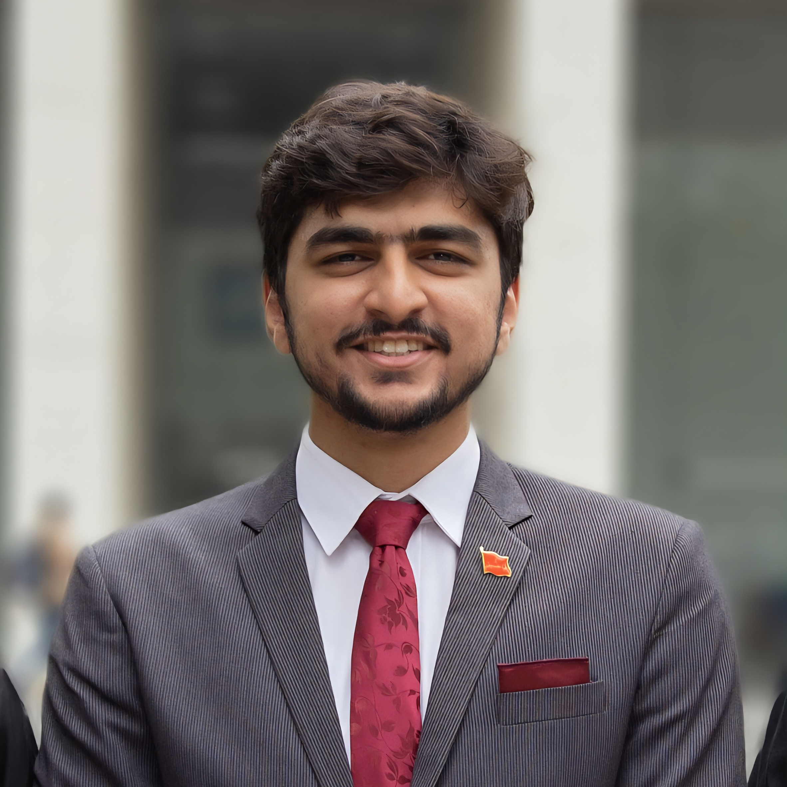

BS Computer Science (Graduation with Merit / Cum Laude)
Relevant Coursework: Networks and Systems, Data Structures/Algorithms, Software Engineering, Operating Systems, Databases, AI & ML, Natural Language Processing.

Computer Science Researcher | Systems, Networks, HCI & Applied AI
Karachi, Pakistan
Download CVComputer Science researcher and LUMS alumnus specializing in the intersection of Systems & Networks, Human-Computer Interaction (HCI), and Applied AI. Sole author of an IEEE-published paper on transport-layer scheduling. Proven ability to engineer low-level protocols (C++, ns-3) and architect scalable, user-centric AI applications (Rust, Python). Currently utilizing a gap year in enterprise cybersecurity to study the practical constraints, threat models, and operational bottlenecks of large-scale distributed systems. Eager to bring this blend of theoretical rigor and real-world systems perspective to complex, cross-cutting problems in a top-tier graduate research group.
Computer Networks, Distributed Systems Architecture, Systems Programming, Human-Computer Interaction (HCI), and Applied Artificial Intelligence.
Relevant Coursework: Networks and Systems, Data Structures/Algorithms, Software Engineering, Operating Systems, Databases, AI & ML, Natural Language Processing.
S. M. A. Rizvi. "A Case for CATS: A Conductor-driven Asymmetric Transport Scheme for Semantic Prioritization." Proceedings of the 6th International Conference on Innovative Computing (ICIC 2025). Published in IEEE Xplore.
S. M. A. Rizvi. "A Literature Review of Keyword Spotting Technologies for Urdu." Independent Technical Report.